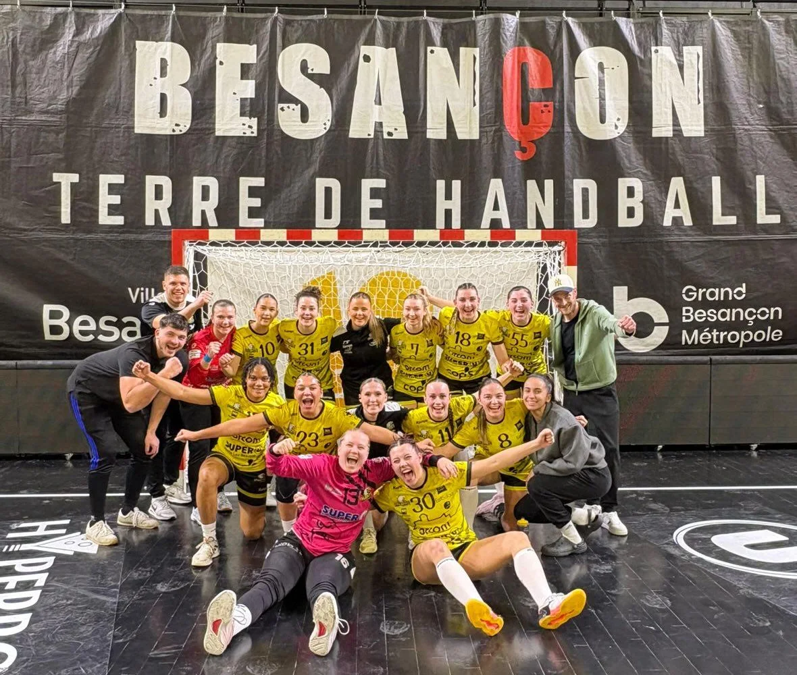
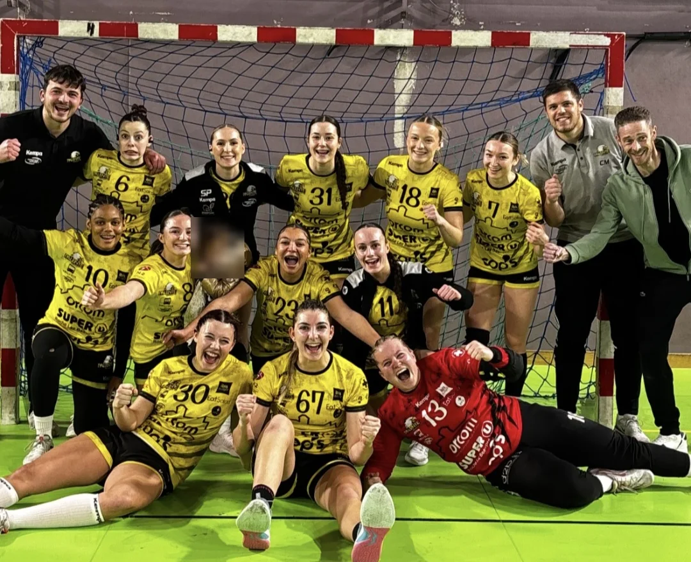
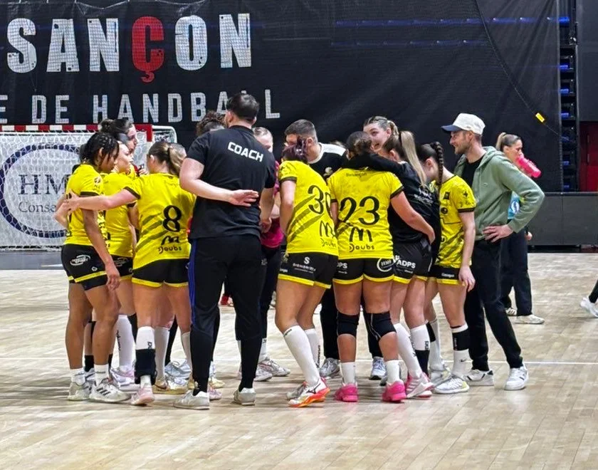
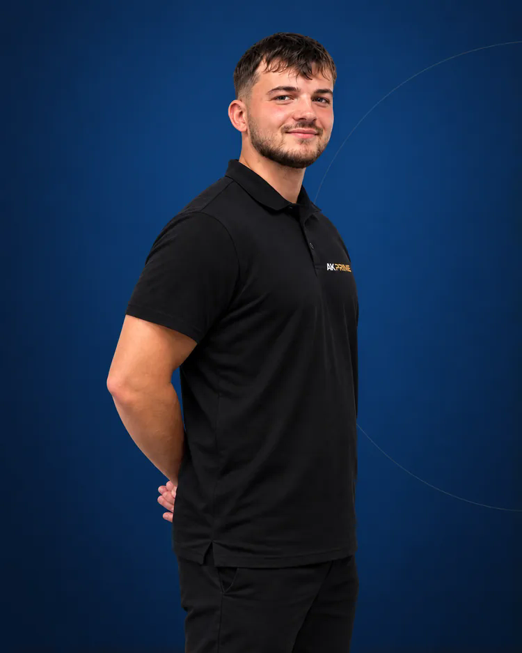

Explosivité
Détente, premiers appuis, puissance de tir en suspension.
Duels, appuis, sprints répétés, tirs en suspension : le handball sollicite énormément le corps. AK PRIME construit votre préparation autour de vos entraînements de club, de vos matchs et de votre poste, pour progresser sans vous cramer.
Expérience en handball à Palente Besançon (niveau national) · Master STAPS · 100 % à distance

Chaque programme part de votre poste et de vos besoins : on travaille ce qui vous fera gagner des duels, pas des kilos sur une machine.
Détente, premiers appuis, puissance de tir en suspension.
Sprints courts répétés, replis défensifs, montées de balle.
Force, gainage et contacts pour encaisser et gagner les un-contre-un.
Appuis, freinages et relances, en sécurité pour les genoux et les chevilles.
Gestion de la charge entre club, matchs et prépa, pour arriver frais le week-end.
Réathlétisation progressive jusqu’aux exigences du terrain, en lien avec votre kiné.
Les séances AK PRIME se placent là où elles vous font progresser sans vous fatiguer avant le match.
Exemple indicatif : votre semaine est construite selon votre calendrier, votre niveau et votre formule.
Nationale, prénationale ou championnat régional : l’entraînement collectif ne laisse pas toujours le temps de travailler votre physique de façon individualisée. C’est là qu’AK PRIME intervient, en complément de votre coach.
Détente, vitesse sur les premiers appuis, puissance de tir et engagement dans les duels.
Gérer la charge entre entraînements et matchs pour rester performant jusqu’aux derniers matchs.
Réathlétisation progressive après une blessure (genou, cheville, épaule), en lien avec les indications de votre kiné ou de votre médecin.
Une démarche personnalisée, jamais une promesse de résultat identique pour tous.
Chaque cycle tient compte de votre poste, de votre calendrier de matchs et de vos séances de club. L’objectif : arriver frais le week-end et progresser semaine après semaine.
Poste, niveau, volume d’entraînement en club, historique de blessures, objectifs de la saison.
Tests réalisables à distance selon votre matériel : sauts, vitesse, force, lorsque c’est pertinent.
Séances placées autour des entraînements et des matchs, avec des cycles adaptés à la saison et à la trêve.
Retours après chaque séance et suivi de la fatigue pour éviter la surcharge.
Ajustements selon les matchs, la fatigue et les retests, avec analyse vidéo selon la formule.
Avec Palente Besançon Handball, en préparation physique puis aussi en préparation mentale.



Diplômé d’un Master STAPS en entraînement et optimisation de la performance sportive, Alex Kieffer a notamment travaillé en handball à Palente Besançon (montée en N2 sans perdre un match) et avec la section handball Stendhal, championne de France UNSS 2026. Il a aussi assuré la préparation physique de l’équipe pro féminine de football de Thonon Évian Grand Genève (Seconde Ligue) et de boxeurs jusqu’au niveau pro.
Découvrir le parcours du coachRetrouvez ici les prestations essentielles. En cliquant sur une formule, vous accédez directement à sa fiche complète ou à la souscription sécurisée sur le site officiel AK PRIME.
Un programme structuré, des repères concrets et une autonomie accompagnée.
Un pilotage hebdomadaire plus fin de l'entraînement et de la récupération.
Un accompagnement rapproché lorsque les contraintes et la fatigue l'exigent.
Vous hésitez entre deux formules ? Le bilan découverte offert de 20 min sert justement à choisir ensemble, sans engagement. Les tarifs, conditions d’engagement, détails des prestations et démonstrations sont confirmés sur les cartes officielles AK PRIME, pour éviter toute information obsolète.
Vos données ne restent pas dispersées. Selon votre formule, le Passeport AK PRIME et Optitrainer permettent de retrouver les repères essentiels de votre préparation.
Un espace personnalisé pour retrouver votre accompagnement, selon les fonctionnalités prévues par la formule.
Les réponses aux questions que se posent le plus souvent les sportifs avant de commencer.
Oui, si c’est bien dosé. Le programme est construit autour de vos séances de club et de vos matchs : le volume, l’intensité et le placement des séances sont choisis pour vous faire progresser sans ajouter de fatigue inutile avant le week-end.
AK PRIME vient en complément de votre entraîneur, pas à sa place. Le coach du club gère la tactique, la technique et le collectif ; la préparation physique individualisée travaille vos besoins à vous : explosivité, appuis, gainage, prévention des blessures.
Oui, la formule Performance & Réathlétisation est prévue pour ça : reprise progressive, réathlétisation et retour aux exigences du terrain. Le coaching ne remplace pas la rééducation : les indications de votre kiné ou de votre médecin sont prises en compte.
Le programme s’adapte à ce que vous avez : salle de musculation, matériel du club ou simple matériel à la maison. Les séances sont construites en fonction de vos moyens réels.
Vos séances sont sur l’application Optitrainer, vous faites vos retours après chaque séance, et nous faisons le point en visio selon votre formule. Vous pouvez envoyer des vidéos pour une analyse technique.
Les formules Performance démarrent à 99 € par mois, avec un engagement minimum de 3 mois pour laisser le temps à la progression. Le bilan découverte de 20 minutes est offert et sans engagement.
20 minutes en visio pour faire le point sur votre niveau, vos objectifs et la formule la plus adaptée. Gratuit et sans engagement.